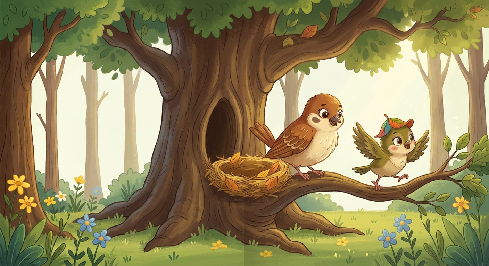
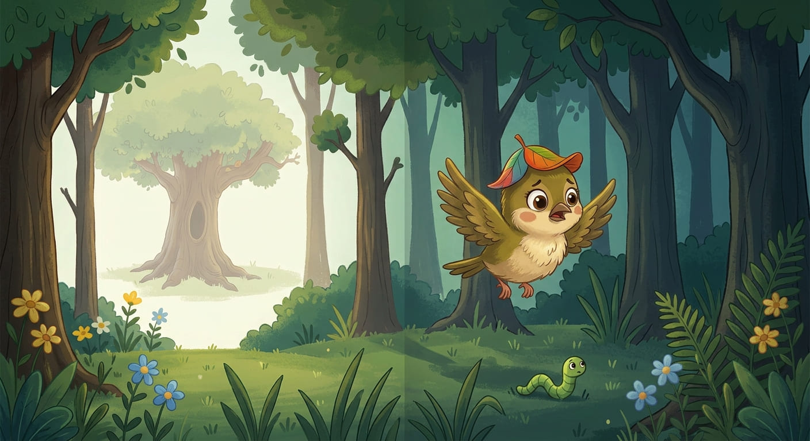

🐦 زئردة العصفورة الصغيرة
الصفحة 1 — العصفورة المشاغبة
في غابة جميلة، كانت تعيش عصفورة صغيرة اسمها زئردة مع أمها في عش دافئ فوق شجرة كبيرة.
كانت زئردة تحب الطيران واللعب واستكشاف كل مكان في الغابة.
لكن أمها كانت دائمًا تقول لها: «يا زئردة، لا تبتعدي كثيرًا عن العش، حتى لا تتوهي.»
فتجيبها زئردة: «حاضر يا أمي!» لكنها في الحقيقة لم تكن تستمع جيدًا إلى كلام أمها.

الصفحة 2 — أين ذهبت زئردة؟
في يوم من الأيام، كانت زئردة تلعب بالقرب من العش، فرأت دودة صغيرة تزحف بين الأعشاب. قالت بسعادة: «سأطير خلفها!»
وظلت تطير وراء الدودة من مكان إلى آخر، حتى ابتعدت كثيرًا عن عشها دون أن تشعر.
وفجأة توقفت زئردة ونظرت حولها. لم تجد العش! قالت بخوف: «يا إلهي! أين أنا؟ لقد تاهت مني الطريق!»

الصفحة 3 — الأرنب اللطيف
بدأت زئردة تمشي بين الأشجار وهي تبكي. وبعد قليل، قابلت أرنبًا لطيفًا.
سألها الأرنب: «لماذا تبكين أيتها العصفورة الصغيرة؟»
قالت زئردة: «أنا تائهة ولا أعرف كيف أعود إلى بيتي.»
فكر الأرنب قليلًا ثم سألها: «هل تتذكرين شيئًا كان قريبًا من عشكم؟»
قالت زئردة: «نعم! كان بجانب عشّنا علم أصفر.»
ابتسم الأرنب وقال: «لا تقلقي، سأساعدك في العودة إلى بيتك.»
.jpeg)
الصفحة 4 — العصفورة الجائعة
ظل الأرنب وزئردة يمشيان في الغابة بحثًا عن الطريق. وبعد وقت طويل قالت زئردة: «أنا جائعة جدًا!»
قال الأرنب: «أعرف مزرعة صغيرة بجانب النهر، فيها ذرة لذيذة. تعالي، نأكل قليلًا ثم نكمل طريقنا.»
ذهبا معًا إلى المزرعة، وبدأا يأكلان الذرة. لكن فجأة... سمعا صوتًا عاليًا! «هوووو! ابتعدا عن المزرعة!»
كان كلب الحراسة قد رآهما وبدأ يركض خلفهما.
.jpeg)
الصفحة 5 — في النهر!
خاف الأرنب وزئردة وبدآ يجريان بأقصى سرعة. لكن دون أن ينتبها... وصلا إلى حافة النهر! وفجأة سقطا في الماء.
حاولت زئردة الطيران، لكن جناحها اصطدم بحجر وأُصيب. صرخت: «آه! جناحي يؤلمني!»
كان الأرنب أيضًا متعبًا ولا يستطيع السباحة جيدًا.
.jpeg)
الصفحة 6 — صديق من النهر
وبينما كانا يحاولان النجاة، ظهر دولفين لطيف. اقترب منهما بسرعة وساعدهما على الخروج من الماء، وأوصلهما إلى الشاطئ بأمان.
قال الأرنب لزئردة: «أنا آسف يا زئردة، لقد أُصبت وتعبت كثيرًا، ولن أستطيع أن أكمل معك. سأعود إلى بيتي.»
حزنت زئردة، لكنها قالت: «شكرًا لك لأنك ساعدتني.» ثم تابعت طريقها وحدها.
.jpeg)
الصفحة 7 — ليلة في الغابة
ظلت زئردة تمشي وتمشي، حتى بدأ الليل يحل. كانت الغابة مظلمة، وبدأت تخاف من الحيوانات المفترسة.
نظرت حولها حتى وجدت جحرًا صغيرًا داخل شجرة. قالت: «سأبيت هنا حتى يأتي الصباح.»
دخلت زئردة إلى الجحر ونامت وهي تشعر بالتعب والخوف.
.jpeg)
الصفحة 8 — السنجاب
عندما أشرقت الشمس، استيقظت زئردة. وفجأة وجدت سنجابًا صغيرًا ينظر إليها بدهشة. قال: «من أنتِ؟ وماذا تفعلين في بيتي؟»
اعتذرت زئردة وحكت له كل ما حدث معها منذ أن ابتعدت عن عشها.
استمع السنجاب إليها وقال: «لا تقلقي، ربما أستطيع مساعدتك!» ثم فكر قليلًا وقال: «لدي صديقة بومة تعرف كل أماكن الغابة، سأذهب وأسألها.»
.jpeg)
الصفحة 9 — البومة تعرف الطريق
طار السنجاب سريعًا وأخبر البومة بقصة زئردة.
فكرت البومة قليلًا وقالت: «علم أصفر بالقرب من عش عصفورة؟ أعتقد أنني أعرف المكان!»
ثم قالت: «تعالوا معي، سأوصلكم إلى هناك.» فرحت زئردة كثيرًا، وبدأت تسير مع السنجاب والبومة.
.jpeg)
الصفحة 10 — العودة إلى البيت
طارت البومة فوق الأشجار، وتبعها السنجاب وزئردة حتى وصلوا إلى مكان تعرفه زئردة.
وفجأة رأت شيئًا أصفر يلمع بين الأشجار. صرخت بسعادة: «العلم الأصفر! هذا هو! لقد وجدنا بيتي!»
أسرعت زئردة نحو عشها.
.jpeg)
الصفحة 11 — حضن الأم
ما إن رأت أم زئردة ابنتها حتى طارت إليها بسرعة واحتضنتها. كانت الأم تبكي من شدة الفرح.
وقالت: «زئردة! أين كنتِ؟ لقد كنت قلقة عليكِ جدًا!»
بكت زئردة أيضًا وقالت: «أنا آسفة يا أمي. لقد أخطأت عندما ابتعدت عن العش ولم أسمع كلامك. أعدك أنني لن أبتعد وحدي مرة أخرى، وسأستمع إلى نصائحك.»
ابتسمت الأم واحتضنتها أكثر وقالت: «أهم شيء أنك عدتِ إليّ سالمة يا صغيرتي.»
.jpeg)
الصفحة 12 — الدرس الجميل 🌸
ومنذ ذلك اليوم، تعلمت زئردة درسًا مهمًا: عرفت أن الاستماع إلى نصائح الأم والأب يحمي الأطفال من الأخطار، وأن طلب المساعدة من الأشخاص الطيبين يمكن أن يساعدنا عندما نقع في مشكلة.
وعاشت زئردة مع أمها في عشهما الصغير... وكانت كلما أرادت أن تطير بعيدًا تقول: «سأستأذن أمي أولًا!» 🐦💗
.jpeg)